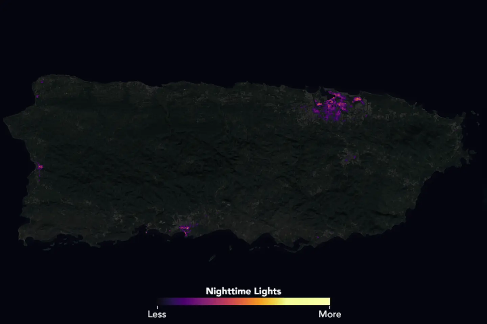
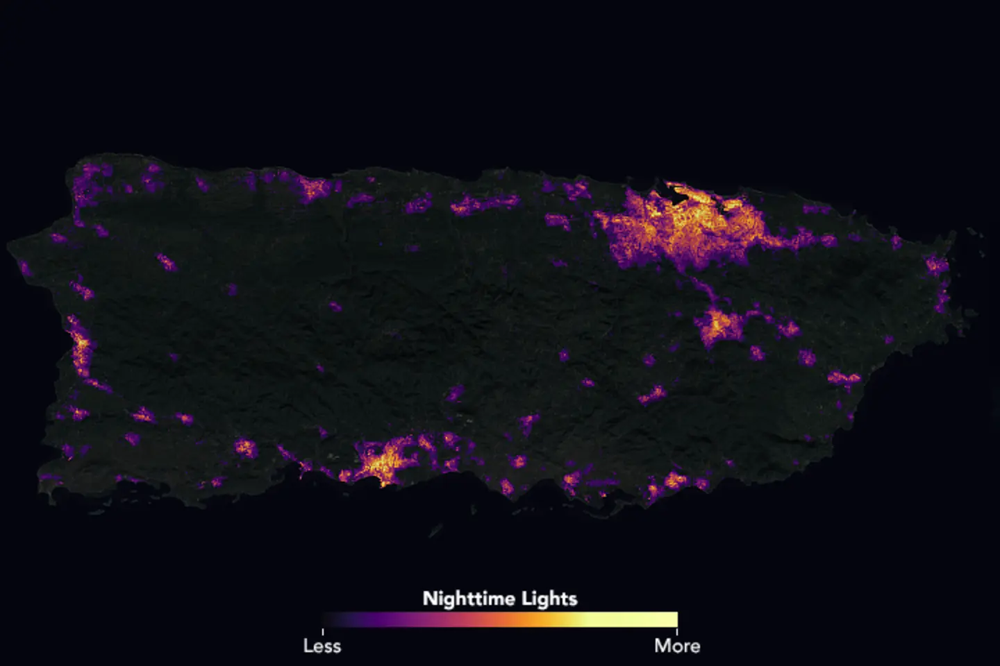
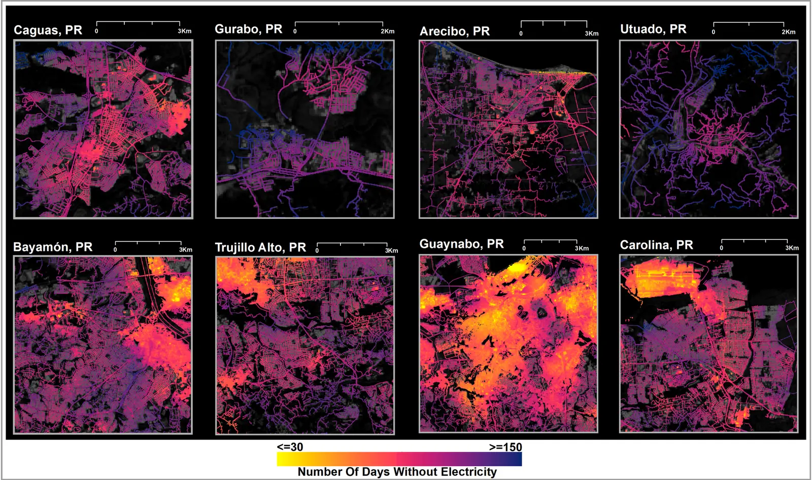

01 / 先看见黑暗
停电从来不是按下一只总开关。
2017 年 9 月 20 日，飓风 Maria 横穿波多黎各。电网倒下之后，圣胡安的核心、沿海城镇和山区并没有进入同一种黑暗。
从地面看，停电是一张不断更新的用户清单；从太空看，它是一片亮度突然降低的纹理。某些道路和设施仍然发亮，大片住宅区却沉入黑色。之后，光以街区为单位，时断时续地回来。
02 / 一个像素有多大
这不是一户人家的灯。
VIIRS Black Marble 的原生网格约为 15 角秒，在波多黎各大致相当于 500 米。一个像素里可能同时包含住宅、商店、路灯、车流与黑暗的空地。
研究者把 VIIRS 与 Landsat、Sentinel 和建筑数据结合，才得到约 30 米的高分辨率估计。那是模型化下推，不是卫星直接看见了每条街。
能说：这一片区域的夜间辐亮度变了。
不能说：这个家庭此刻一定停电。


整座岛的电网遭到破坏。
03 / 灯怎样回来
恢复，不是一条平滑上升的曲线。
2017 年 9 月 20 日
第一夜：基准消失了
云、月光、临时光源和观测缺口都会改变单日影像。研究团队因此把连续夜间观测、天气校正和电力公司报告放在一起判断。
约两个月后
城市中心先亮，边缘还在等
绿黄区域较早恢复；红紫区域等待更久。优先恢复的线路与人口密度，让同一都会区内部出现数十天的差距。
约四个月后
地图越来越亮，差异却更醒目
在圣胡安的研究样本中，超过一半街区的恢复落在 90–120 天。一个全岛“恢复率”会把这些等待压缩成单个数字。
约六个月后
最后亮起的地方，往往不在地图中央
山区、低密度社区与受损道路附近的恢复更慢。岛已经重新发光，但并不意味着每个人都已结束停电。
04 / “大致恢复”之后
一个百分比，藏住了谁还在黑暗里。
NASA 团队把卫星推断与波多黎各电力局报告逐日比较，两者具有较高一致性（R = 0.839，195 天）。但空间分布告诉我们，恢复的平均值并不是每个街区的经历。
来源：Román 等（2019），基于 Black Marble 高分辨率停电图的圣胡安 block group 统计。
农村社区只占部分人口，却承担了研究估算中 61% 的断电用户小时。光回来得慢，往往与道路、电线、桥梁和维修可达性一起发生。

05 / 黑暗里的亮点
医院、机场、主干道为什么还亮着？
一片变暗的城市里，常会留下孤立的光岛。但一颗亮点，本身不能告诉我们它靠什么发电。
某一区域仍有光
包括建筑照明、道路、车流、火焰或其他光源。
它是否对应关键设施
机场、医院与交通枢纽必须由可靠地理数据确认。
它是否由备用电源维持
仅凭夜光，不能区分电网供电、发电机或其他临时光源。
因此，本故事展示“光在哪里保留下来”，不把任何像素直接标成“医院有电”或“某户恢复”。
06 / 同一种传感器，不同的停电
四次熄灯，四种时间尺度。
选择事件，查看卫星或论文在某个关键时刻留下的证据。它们不是一张排行榜，也不使用不相容的图像计算强弱。
2017.09.20 → 2018.03.20
飓风 Maria · 波多黎各
六个月尺度。全岛重新变亮，但农村与山区承担了更长等待。
- 证据
- NASA Black Marble + 电力局记录 + 人口与道路数据
- 能回答
- 恢复时间在空间上如何分布
- 不能回答
- 每户在某一时刻是否通电
07 / 怎样读这张夜图
夜间灯光是线索，不是停电账本。
先校正天空
月光、云、气溶胶、雪与观测角度都会改变亮度。Black Marble 产品尝试去除这些影响。
再选基准夜
灾前与灾后必须使用可比的处理、范围和季节；单夜空值不能自动解释为停电。
最后回到地面
电力公司、道路损毁、设施位置与现场报道决定“变暗”究竟意味着什么。
查看数据限制与来源
VIIRS 日度产品的原生空间分辨率约 500 米。文中 30 米街区图来自研究团队结合多源数据的模型化下推。飓风 Ian、Beryl 和 Maria 的图像由 NASA 发布；加拉加斯图表来自同行评审研究。不同案例只作叙事比较，不把色彩或亮度直接放在同一数轴上。
从太空看，城市重新亮了。